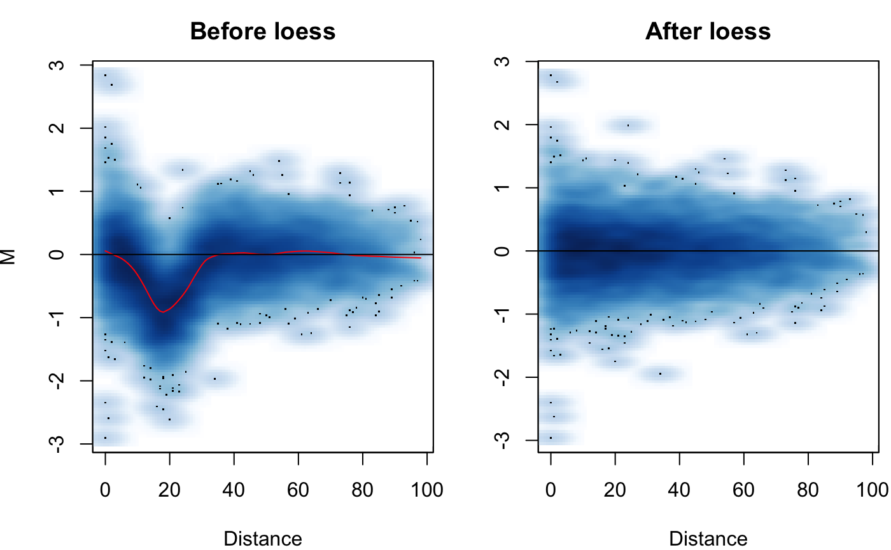
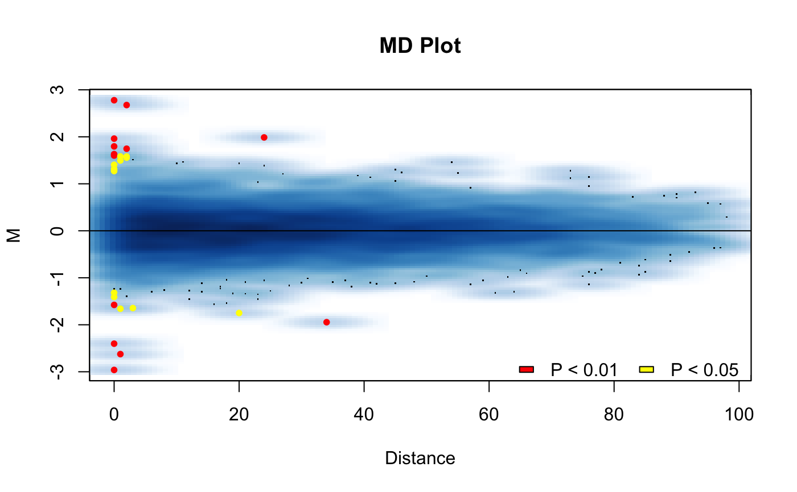
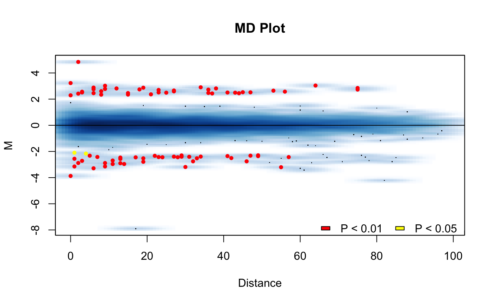

Simulate a Hi-C matrix and perform HiCcompare analysis on it
Source:R/hic_simulate.R
hic_simulate.RdSimulate a Hi-C matrix and perform HiCcompare analysis on it
hic_simulate( nrow = 100, medianIF = 50000, sdIF = 14000, powerlaw.alpha = 1.8, sd.alpha = 1.9, prop.zero.slope = 0.001, centromere.location = NA, CNV.location = NA, CNV.proportion = 0.8, CNV.multiplier = 0, biasFunc = .normal.bias, fold.change = NA, i.range = NA, j.range = NA, Plot = TRUE, scale = TRUE, alpha = 0.05, diff.thresh = NA, include.zeros = FALSE )
Arguments
| nrow | Number of rows and columns of the full matrix |
|---|---|
| medianIF | The starting value for a power law distribution for the interaction frequency of the matrix. Should use the median value of the IF at distance = 0. Typical values for 1MB data are around 50,000. For 500kb data typical values are 25,000. For 100kb data, 4,000. For 50kb data, 1,800. |
| sdIF | The estimated starting value for a power law distriubtion for the standard deviaton of the IFs. Should use the SD of the IF at distance = 0. Typical value for 1MB data is 19,000. |
| powerlaw.alpha | The exponential parameter for the power law distribution for the median IF. Typical values are 1.6 to 2. Defaults to 1.8. |
| sd.alpha | The exponential parameter for the power law distribution for the SD of the IF. Typical values are 1.8 to 2.2. Defaults to 1.9. |
| prop.zero.slope | The slope to be used for a linear function of the probability of zero in matrix = slope * distance |
| centromere.location | The location for a centromere to be simulated. Should be entered as a vector of 2 numbers; the start column number and end column number. i.e. to put a centromere in a 100x100 matrix starting at column 47 and ending at column 50 enter centromere.location = c(47, 50). Defaults NA indicating no simulated centromere will be added to the matrix. |
| CNV.location | The location for a copy number variance (CNV). Should be entered as a vector of 2 numbers; the start column number and end column number. i.e. to put a CNV in a 100x100 matrix starting at column 1 and ending at column 50 enter CNV.location = c(1, 50). Defaults NA indicating no simulated CNV will be added to the matrices. If a value is entered one of the matrices will have a CNV applied to it. |
| CNV.proportion | The proportion of 0's to be applied to the CNV location specified. Defaults to 0.8. |
| CNV.multiplier | A multiplyer to be applied as the CNV. To approximate deletion set to 0, to increase copy numbers set to a value > 1. Defaults to 0. |
| biasFunc | A function used for adding bias to one of the simulated matrices. Should take an input of unit distance and generally have the form of 1 + Probability Density Function with unit distance as the random variable. Can also use a constant as a scaling factor to add a global offset to one of the matrices. The output of the bias function will be multiplied to the IFs of one matrix. Included are a normal kernel bias and a no bias function. If no function is entered, a normal kernel bias with an additional global scaling factor of 4 will be used. To use no bias set biasFunc = .no.bias, see examples section. |
| fold.change | The fold change you want to introduce for true differences in the simulated matrices. Defaults to NA for no fold change added. |
| i.range | The row numbers for the cells that you want to introduce true differences at. Must be same length as j.range. Defaults to NA for no changes added. |
| j.range | The column numbers for the cells that you want to introduce true differences at. Must be same length as Defaults to NA for no changes added. |
| Plot | Logical, should the HiCdiff plots be output? Defaults to TRUE. |
| scale | Logical, Should scaling be applied for the HiCdiff procedure? Defaults to TRUE. |
| alpha | Type I error rate parameter. At what level should a significant difference be defined. Defaults to 0.05. |
| diff.thresh | Parameter for hic_diff procedure. See ?hic_diff for more help. Defaults to NA. |
| include.zeros | Should partial zero interactions be included? Defaults to FALSE. |
Value
A list containing the true positive rate (TPR), the specificity (SPC), the p-values, the hic.table object, true differences - a data.table of the rows of the hic.table where a true difference was applied, the truth vector - a vector of 0's and 1's where 1 indicates a true difference was applied to that cell, sim.table - the hic.table object for the simulate matrices before hic_loess and hic_compare was run on it.
Examples
#>#>#>#># example of bias functions ## the default function used .normal.bias = function(distance) { (1 + exp(-((distance - 20)^2) / (2*30))) * 4 } ## an additional bias function .no.bias = function(distance) { 1 } # simulate matrices with 200 true differences using no bias i.range = sample(1:100, replace=TRUE) j.range = sample(1:100, replace=TRUE) sim2 <- hic_simulate(nrow=100, biasFunc = .no.bias, fold.change = 5, i.range = i.range, j.range = j.range)#>#>#>#>#>#>#>